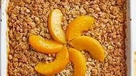

Description

Ingredients
- Brown sugar
- Old fashioned oats
- Vanilla extract
- Heavy cream
- Butter
- Peaches
- Cinnamon
Steps
- Preheat oven to 400 degrees
- Mix oats, brown sugar, vanilla extract, and heavy cream
- Place peaches into backing dish with brown sugar, a diced stick of butter, and a bit of vanilla extract and cinnamon
- Dollop oat mix onto peaches
- Bake in the oven for 45 minutes and enjoy
Home Page